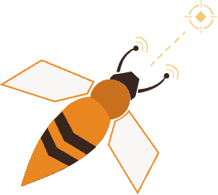
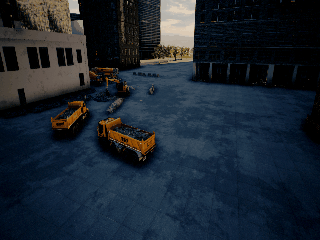
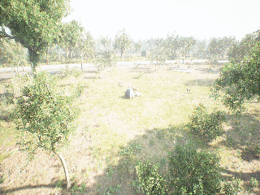
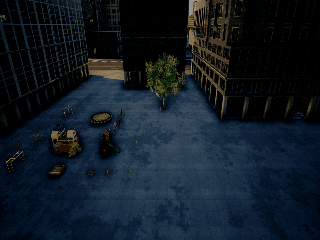
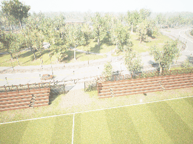
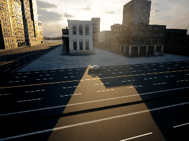

ScoutVLA: UAV-Centric Active Perception via a Dual-Expert VLA Model for Open-World Embodied Question AnsweringAbstract
Aerial Embodied Question Answering (EQA) requires Unmanned Aerial Vehicles (UAVs) to actively perceive the environment and answer natural language questions. Existing outdoor EQA systems usually stop once the target enters the UAV's field of view, leaving the fine-grained viewpoint adjustment needed for evidence-seeking questions largely unresolved. To address this issue, we introduce FG-EQA, a fine-grained active perception EQA benchmark with more than 40K simulated trajectories and 1K real-world trajectories. Drawing inspiration from the “waggle dance” of scout bees, which iteratively adjust their flight paths to verify target information, we propose ScoutVLA, an evidence-driven Vision-Language-Action model for outdoor EQA.
To emulate this active exploration behavior, ScoutVLA features a decoupled dual-expert architecture: a vision-language expert infers the semantic intent to identify missing evidence, while an independent action expert employs high-DoF flow matching to generate continuous viewpoint-refinement trajectories.
To balance the competing demands of continuous control and semantic reasoning, we devise a decoupled training strategy with a knowledge insulation mechanism that prevents the action gradients from erasing the model's multimodal reasoning ability.
Extensive simulated experiments and a qualitative real-world field study both verify the superiority of ScoutVLA over the state-of-the-art baselines, demonstrating a 10.48× higher average strict success rate and a 7.72× higher average QA correctness.
Simulation Experiments
The color of penguins' eyebrows.

License plate number.

Interior condition of the tent.
Condition of the wooden stool.
Interior condition of the canoe.

Number of swings.

Interior condition of the red car.

The damage condition of the front windshield.
Real-World Experiments
Figure out the basketball brand
Observe the signboard
Check the text on the signboard